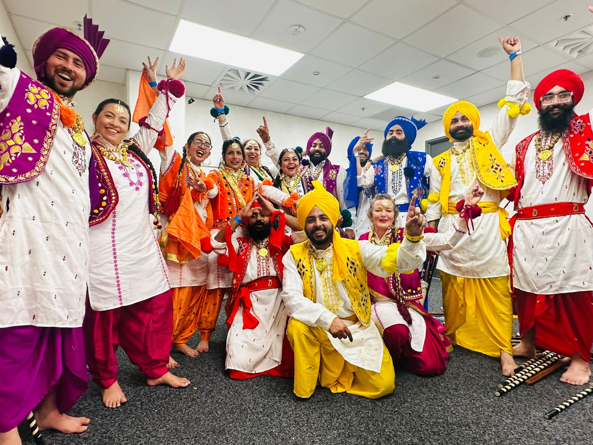

Introduction
Hi there! I'm Amit Singh. I've been living in beautiful New Zealand for 7 years now.
Professional Life
I studied business management and currently work in the insurance industry. It's a challenging field, but I enjoy the work.
Passion for Dance
I have a deep passion for dance. In my free time, I run a dance academy where I provide classes on weekends.
Love for Vintage Cars
I'm a big fan of vintage sports cars. There's something about their classic design and powerful engines that captivates me.
Hobbies
Aside from dancing and vintage cars, I also enjoy painting, cooking, and DIY projects.
- Painting: I find solace in expressing myself through art.
- Cooking: Experimenting with new recipes is my way of unwinding after a busy day.
- DIY Projects: I love getting my hands dirty and creating something with my own two hands.